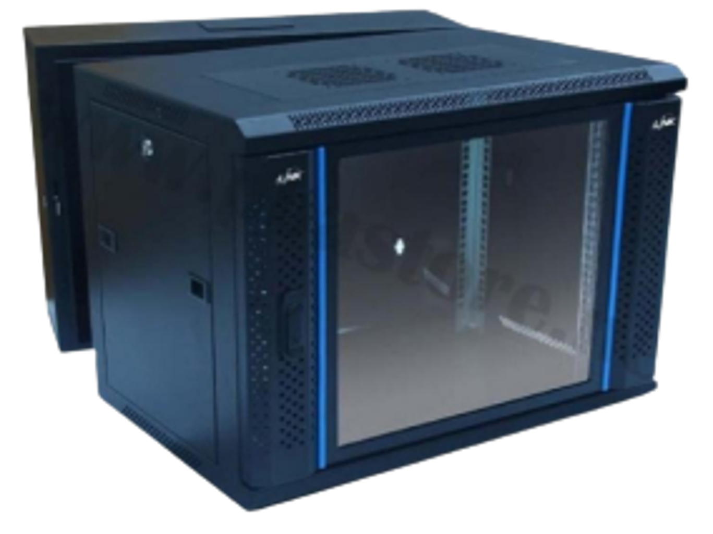
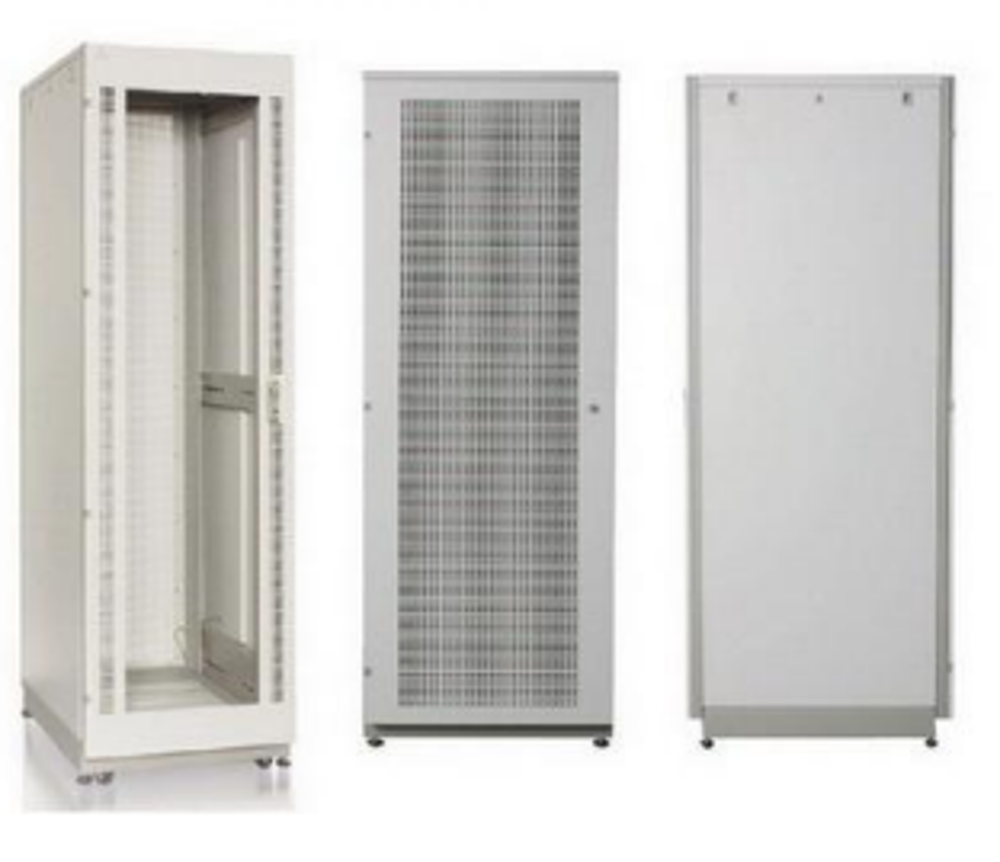
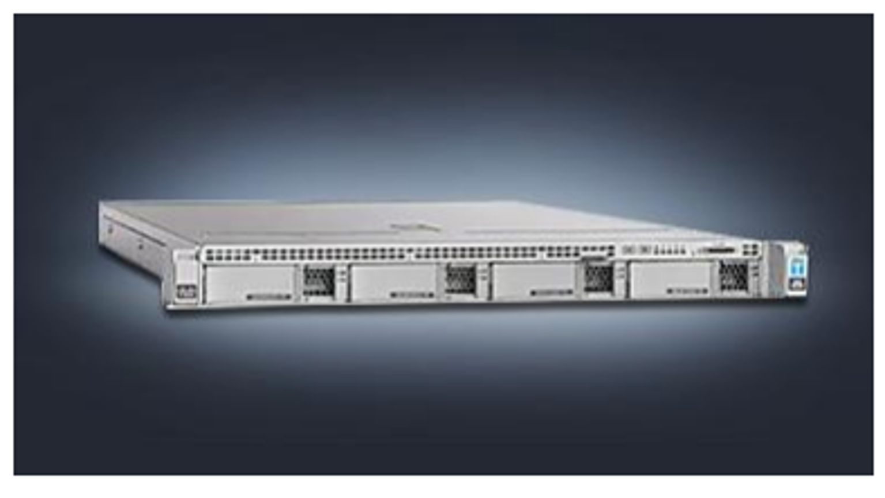
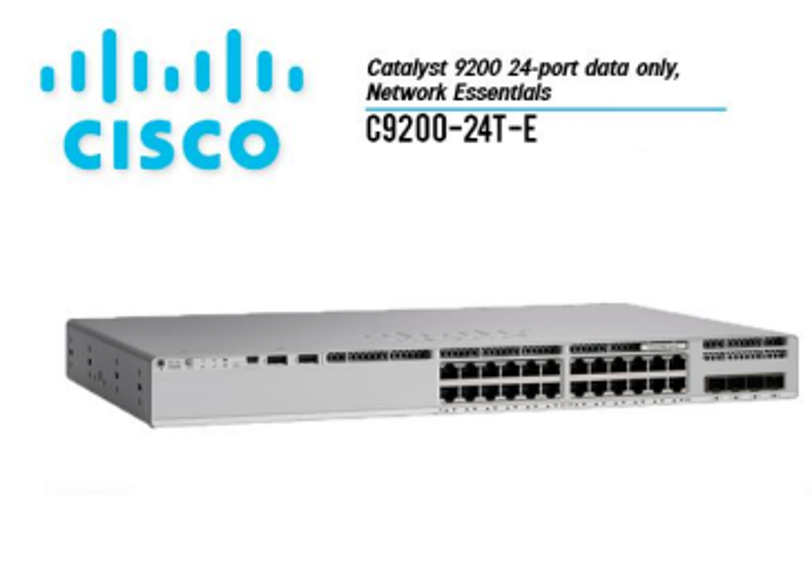
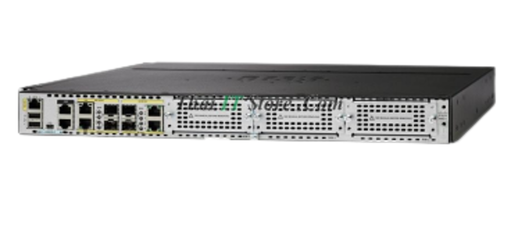
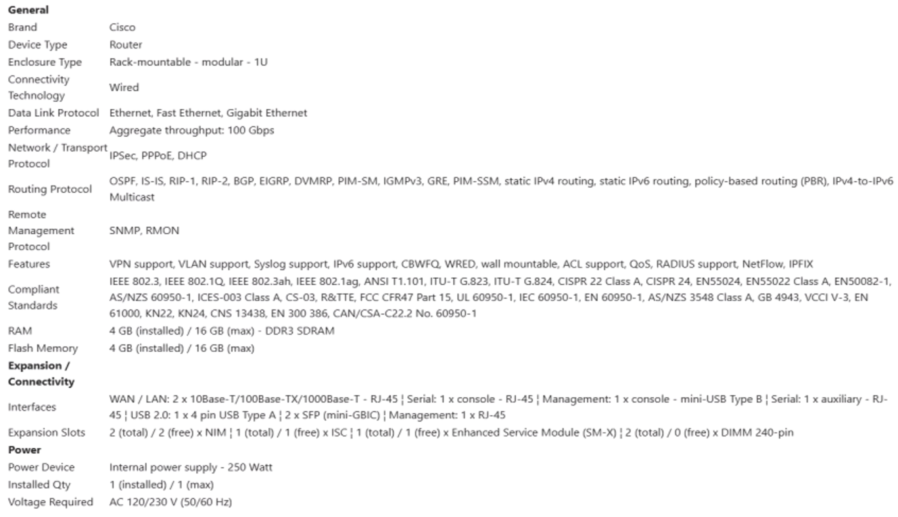
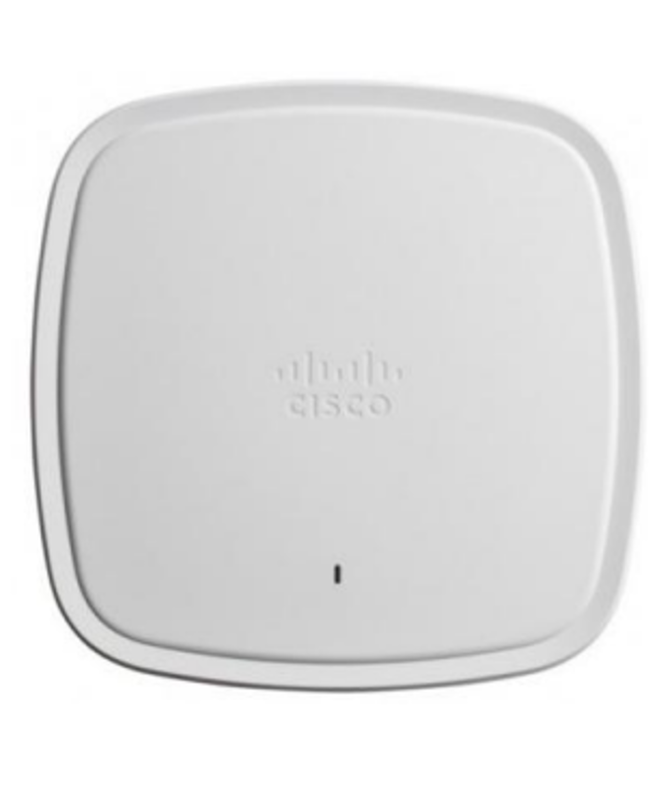
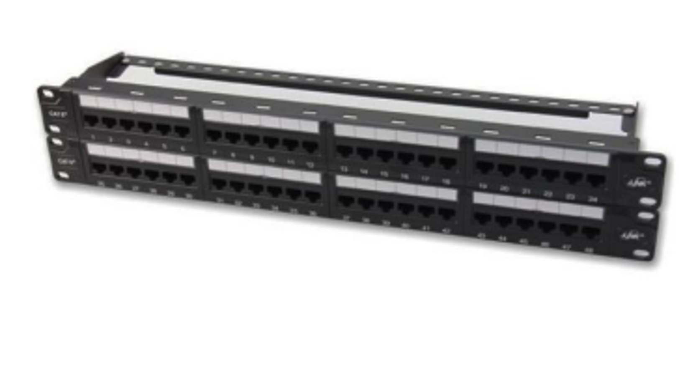
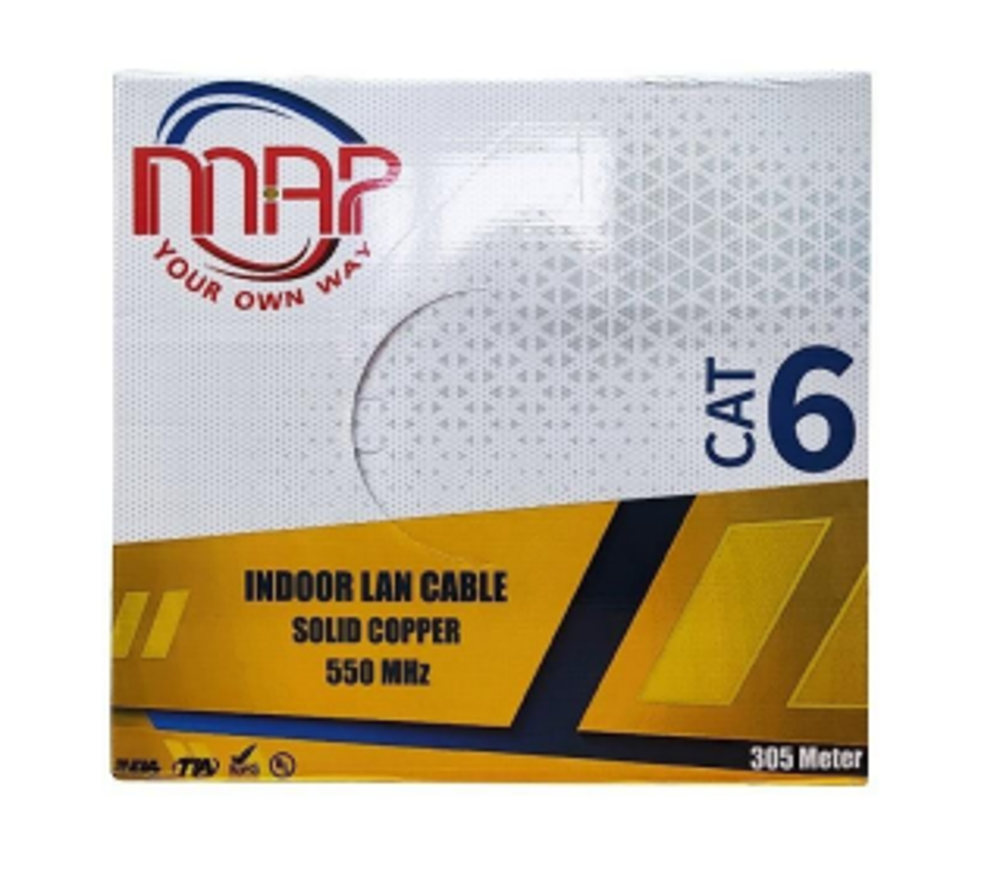
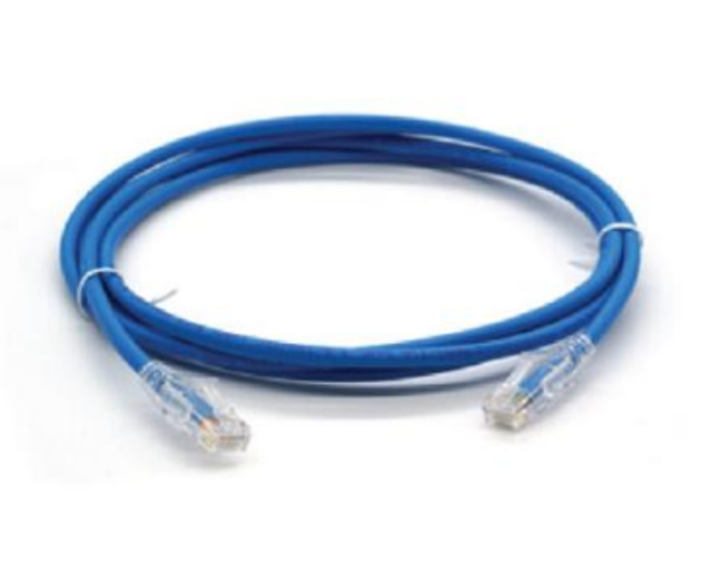

สเปคอุปกรณ์
ตู้ Wall Rack 19 นิ้ว 9U 60x50x50.5CM INTERLINK รุ่น CW2-60509G

ตู้ Wall Rack 9U กว้าง 60 x ลึก 50 x สูง 50.5 ซม. INTERLINK รุ่น CW2-60509G ใช้จัดเก็บอุปกรณ์เครือข่าย คอมพิวเตอร์แบบติดผนัง ฝาหน้าประตูกระจกนิรภัย (Safety Glass) หนา 5 มม. สวยงามแข็งแรง ฝาด้านข้าง สามารถถอดเข้าออกได้โดยใช้สไลด์ล็อคและกุญแจล็อค ตู้ส่วนหลังมีรูยึดน็อตพุกเหล็ก 4 มุม สําหรับแขวนตู้แร็คเข้า กับผนัง แข็งแรงรองรับนํ้าหนักได้มาก ให้ความสะดวกในการติดตั้งและซ่อมบํารุงพร้อมความปลอดภัย
GERMANY Server Rack 42U รุ่นG4-81042

ตู้แร็ค series 4 แบบตั้งพื้น ขนาด 42U กว้าง 80cm ลึก100cm สูง 205 cm
Cisco UCS C220 M4 Specification

-CPU : Intel® Xeon® E5-2609 (4C, 10M Cache, 2.40 GHz, 6.40 GT/s) -RAM :16GB DDR4-2400-MHz RDIMM/PC4-19200/single rank/x4/1.2v -HDD : 300GB 12G SAS 10K RPM SFF HDD -RAID : Cisco 12Gbps SAS 1GB FBWC Cache module (Raid 0/1/5/6) -OPTICAL : N/A -NIC : Dual 1-Gbps Intel i350 Ethernet ports -POWER : 770W AC Hot-Plug Power Supply for 1U C-Series Rack Server -CHASSIS : 1U
Cisco Catalyst 9200|C9200-24T-E Catalyst 920024-port Data Switch , Network Essentials

-Model :C9200-24T-E -Downlinks total 10/100/1000 or PoE+ copper ports :24 ports data -Uplink configuration :Modular uplink options -Default primary AC power supply :PWR-C6-125WAC -Fans :FRU redundant -Software :Network Essentials -Stacking bandwidth :160 Gbps -DRAM :4 GB -Flash :4 GB -Switching capacity :128 Gbps -Forwarding rate :190.4 Mpps -Chassis Dimensions :1.73 x 17.5 x 13.8 in :4.4 x 44.5 x 35.0 cm
Cisco ISR 4331(ISR4331/K9)

รองรับความเร็วในการส่งข้อมูลได้ตั้งแต่ 100 Mbps ถึง 300 Mbps โดยสามารถเพิ่มประสิทธิภาพได้ด้วยการซื้อไลเซนส

อุปกรณ์เสริม
[C9105AXI-S] Cisco Catalyst 9105AX Series มาตรฐานไร้สาย

รองรับ Wi-Fi 6 (802.11ax) และยังสามารถใช้งานร่วมกับมาตรฐาน Wi-Fi รุ่นก่อนหน้า (802.11a/b/g/n/ac) ได้ ความเร็วสูงสุด: สามารถส่งข้อมูลได้สูงสุดถึง 1.488 Gbps (ที่ความถี่ 5 GHz) ซึ่งให้ความเร็วสูงและมีประสิทธิภาพในการใช้งาน เทคโนโลยีวิทยุ (Radio) -2x2 MU-MIMO: รองรับเทคโนโลยี MU-MIMO (Multi-User, Multiple-Input, Multiple-Output) ทั้งในทิศทาง Uplink และ Downlink ทําให้สามารถสื่อสารกับอุปกรณ์หลายเครื่องพร้อมกันได้อย่างมีประสิทธิภาพ -Wi-Fi 6 Features: รองรับเทคโนโลยี Wi-Fi 6 ที่ช่วยเพิ่มประสิทธิภาพ เช่น OFDMA (Orthogonal Frequency-Division Multiple Access) และ TWT (Target Wake Time) ซึ่งช่วยประหยัดพลังงานแบตเตอรี่ของ อุปกรณ์ที่เชื่อมต่อ เสาอากาศ (Antennas): เป็นเสาอากาศภายใน (Internal Antenna) ความถี่ 2.4 GHz: มี Peak gain 4 dBi ความถี่ 5 GHz: มี Peak gain 5 dBi พอร์ตเชื่อมต่อ (Interfaces): มีพอร์ต Gigabit Ethernet (10/100/1000 Base-T) จํานวน 1 พอร์ต สําหรับ เชื่อมต่อกับเครือข่ายหลัก การจ่ายไฟ (Power): รองรับการจ่ายไฟผ่านสายแลน (Power over Ethernet - PoE) ตามมาตรฐาน 802.3af ขนาดและน้ำหนัก: ขนาด: 150 x 150 x 30 มม. นํ้าหนัก: 0.7 ปอนด์ (ประมาณ 329.5 กรัม)
Link US-3148A CAT 6+ Patch Panel 48 Port (2U)

แผงกระจายสายแลน US-3148A ขนาด 48 พอร์ต มาตรฐาน CAT 6 รองรับความเร็ว 10 Gbps ตามข้อกําหนดของ TIA/EIA-568-C.2 Category 6 แผงวงจรของ Patch Panels มีเทคโนโลยีความคุมการส่งสัญญาณป้องกันสัญญาณ รบกวน Insertion Loss และ Cross Talk ที่ 1 MHz ถึง 100 MHz โครงแผงเป็นอลูมิเนียมนํ้าหนักเบาแข็งแรง ด้านหลังมีเส้นเหล็กช่วยการจัดสาย ด้านหน้ารองรับติดป้ายชื่อกํากับ เหมาะสําหรับต่อกับสายแลน 26AWG - 22AWG Solid & Stranded ติดตั้งในตู้แร็ค Rack 19" ใช้พื้นที่ 2U
MAP CAT6 UTP Cable (305m./Box) (C6-8305)

สเปคหลักของสาย MAP CAT6 UTP (C6-8305) ประเภทสาย: UTP (Unshielded Twisted Pair) หมวดหมู่: CAT6 ความยาว: 305 เมตร/กล่อง วัสดุตัวนำ: ทองแดงแท้ (Bare Copper Solid) ขนาดตัวนำ: 24 AWG (American Wire Gauge) หรือเส้นผ่าน ศูนย์กลางประมาณ 0.50 มิลลิเมตร ซึ่งเป็นขนาดมาตรฐานสําหรับสาย CAT6 ความถี่ (Frequency): รองรับแบนด์วิธสูงสุดถึง 550 MHz ซึ่งสูงกว่ามาตรฐานขั้นตํ่าของ CAT6 ทั่วไปที่ 250 MHz วัสดุหุ้มฉนวน (Jacket): PVC (Polyvinyl Chloride) สี: เทา (Grey) การใช้งาน: เหมาะสําหรับติดตั้งภายในอาคาร (Indoor) เพื่อเชื่อมต่ออุปกรณ์เครือข่าย
LINK CAT6 RJ45-RJ45 Patch Cord LSZH (สีฟ้า)(1 M) รุ่น US-5101LZ-4

ประเภทสาย: สาย Patch Cord แบบ Cat6 หัวเชื่อมต่อ: หัว RJ45 ทั้งสองด้าน ความยาว: 1 เมตร วัสดุตัวนำ: ทองแดงแท้ วัสดุเปลือกหุ้ม: LSZH (Low Smoke Zero Halogen) สี: ฟ้า คุณสมบัติเด่นของวัสดุ LSZH LSZH (Low Smoke Zero Halogen) คือวัสดุที่ใช้หุ้มสายไฟหรือสายเคเบิล ซึ่งเมื่อเกิดการเผาไหม้แล้วจะไม่ปล่อย ควันดําและแก๊สพิษที่เป็นอันตรายออกมา (Zero Halogen) ทําให้ปลอดภัยต่อมนุษย์และสิ่งแวดล้อมมากกว่าสาย ทั่วไปที่ใช้ PVC ซึ่งเป็นวัสดุที่ปล่อยควันพิษเมื่อถูกความร้อนสูง
จำนวนอุปกรณ์เสริมที่ใช้
จากอาคาร 10 ชั้น โดยระบบเริ่มต้นที่ชั้น 3-10 ประมาณให้แต่ละชั้นมีจุดที่ใช้เครือข่าย 40 จุด/ชั้น ทั้งหมด 8 ชั้น ทั้งอาคารมีจุดที่ใช้เครือข่ายทั้งหมด 320 จุด
- Cat6 สมมติฐาน: แต่ละจุดใช้สายยาวประมาณ 40m ความยาวสายที่ต้องใช้: 320จุด x 40m = 12,800 m ปริมาณที่ต้องใช้: 12,800m/305m = 42 ม้วน
- Patch Panel ปริมาณ: ใช้ Patch Panel ขนาด 48 พอร์ต จำนวน 1 ตัวต่อชั้น รวมจำนวนที่ต้องใช้: 8 ชั้น x 1 ตัว/ชั้น = 8 ตัว
- Patch Cord ปริมาณ: ใช้สายอย่างน้อยเท่ากับจำนวนจุดเชื่อมต่อทั้งหมด ซึ่งก็คือ 320 เส้น